Image Warping and Mosaicing
The goal of this project is to recover homographies between photographs and use them in two ways: to rectify planar objects photographed at an angle, and to register, warp and blend overlapping photographs into mosaics. The homography solver, the inverse warping with both interpolation methods, and the blending are all implemented in NumPy.
A.1Shooting the photos
Two images are related exactly by a homography only if the scene is planar or the camera rotates about a fixed centre of projection. For each mosaic I therefore stood in one place and rotated the camera between shots, so that all views share approximately the same centre of projection. Consecutive photos overlap by roughly 40–60%, which leaves enough common content to establish correspondences.
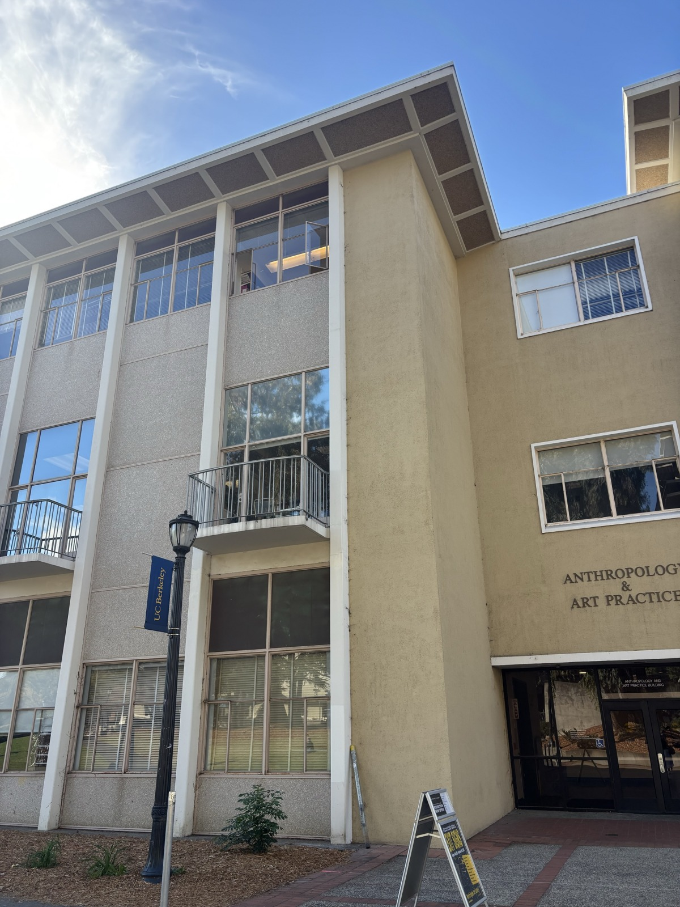
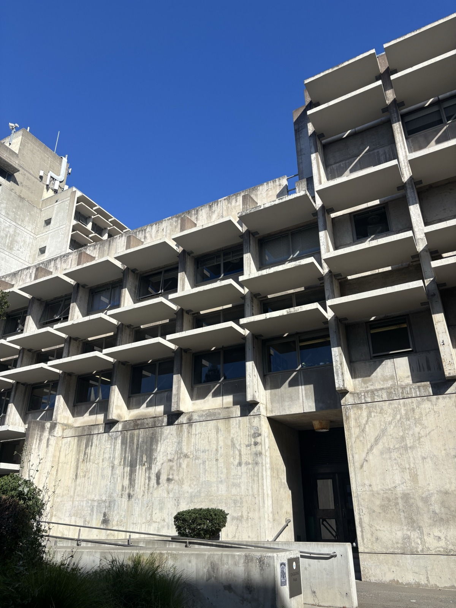
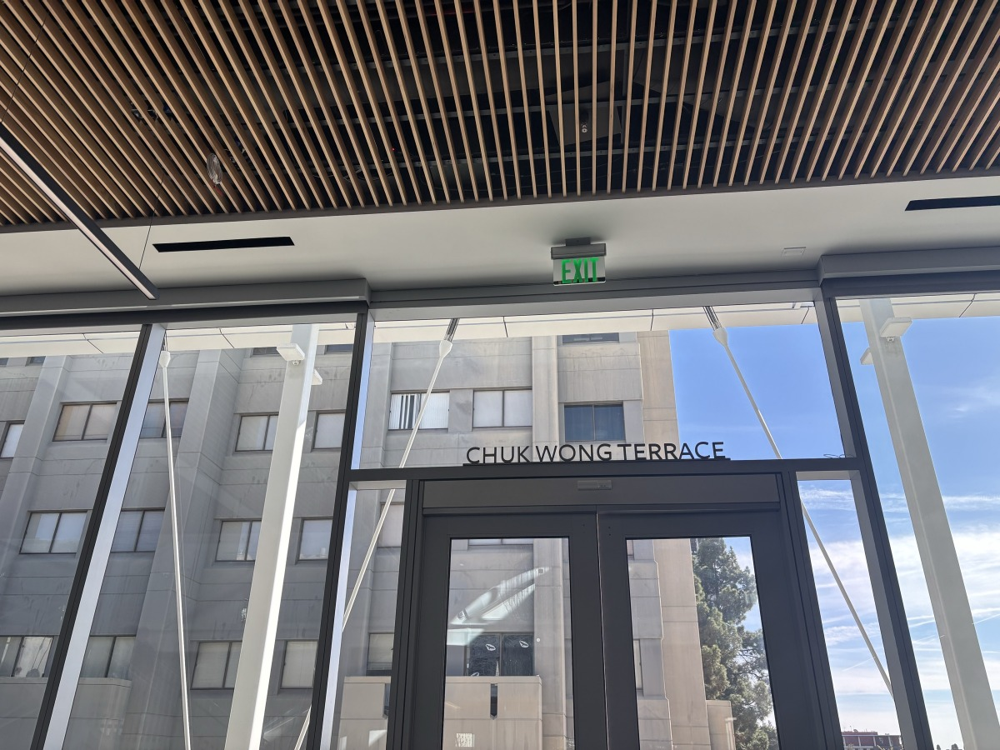
For rectification I photographed two planar rectangular objects at an oblique angle: a campus map sign and the front face of a hand cream box.
A.2Recovering homographies
A homography H maps a point (x, y) in one image to (x', y') in the other, up to a scale factor w. Because H is only defined up to scale, the bottom-right entry is fixed to 1, which leaves eight unknowns:
\[\begin{bmatrix} wx' \\ wy' \\ w \end{bmatrix} = \begin{bmatrix} a & b & c \\ d & e & f \\ g & h & 1 \end{bmatrix} \begin{bmatrix} x \\ y \\ 1 \end{bmatrix} \quad\Rightarrow\quad x' = \frac{ax + by + c}{gx + hy + 1}, \quad y' = \frac{dx + ey + f}{gx + hy + 1}\]
Substituting w = gx + hy + 1 and rearranging yields two equations that are linear in the unknowns for every correspondence:
\[\begin{bmatrix} x & y & 1 & 0 & 0 & 0 & -xx' & -yx' \\ 0 & 0 & 0 & x & y & 1 & -xy' & -yy' \end{bmatrix} \begin{bmatrix} a \\ b \\ c \\ d \\ e \\ f \\ g \\ h \end{bmatrix} = \begin{bmatrix} x' \\ y' \end{bmatrix}\]
computeH(im1_pts, im2_pts) stacks these two rows for every correspondence into a system
Ah = b. Four correspondences determine H exactly, but any localisation error in
those points then propagates directly into the solution. I therefore used 8 to 10 correspondences per pair, which
makes the system overdetermined, and solved it in the least-squares sense with np.linalg.lstsq before
appending the fixed 1 and reshaping h into the 3×3 matrix.
Code: computeH
def system(im1_pts, im2_pts):
# h = [a b c d e f g h], last entry of H fixed to 1
# x' = (ax + by + c) / (gx + hy + 1) -> ax + by + c - gxx' - hyx' = x'
A, b = [], []
for (x, y), (xp, yp) in zip(im1_pts, im2_pts):
A.append([x, y, 1, 0, 0, 0, -x * xp, -y * xp])
A.append([0, 0, 0, x, y, 1, -x * yp, -y * yp])
b.append(xp)
b.append(yp)
return np.array(A, float), np.array(b, float)
def computeH(im1_pts, im2_pts):
# least squares, so more than 4 points averages out clicking error
A, b = system(im1_pts, im2_pts)
h = np.linalg.lstsq(A, b, rcond=None)[0]
return np.append(h, 1).reshape(3, 3)Correspondences were selected with a small matplotlib tool (pick_points.py) that displays both
images side by side and records the clicked coordinates. For some pairs, approximate matches were placed on
distinctive features (window corners, signage, lettering) and each was then refined to the best-matching pixel by
normalised cross-correlation of small surrounding patches, keeping only matches with a high correlation score.
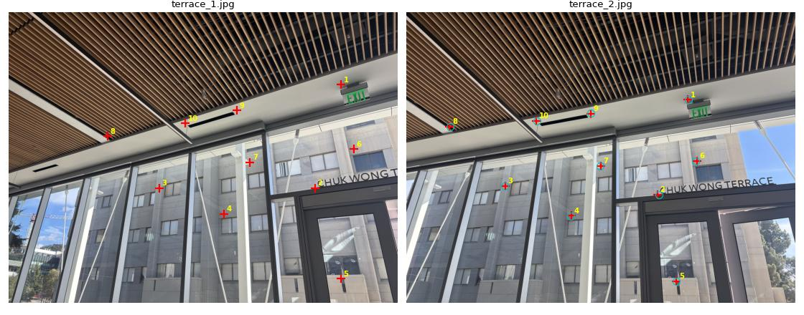
For this pair the system contains 20 equations in 8 unknowns. The recovered homography is:
H = [[ 1.2776 -0.0731 -216.9663]
[ 0.1954 1.1595 -125.8912]
[ 0.0002 0.0000 1.0000]]The mean reprojection error, i.e. the distance between each selected point and the image of its correspondence under H, is 1.9 px.
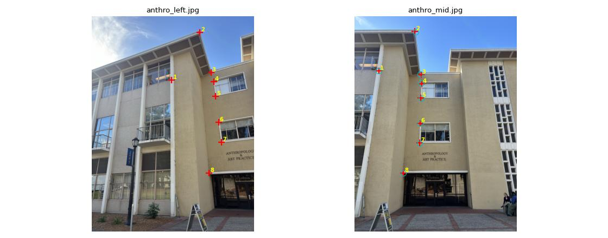
How many points do you need?
To evaluate the benefit of an overdetermined system, I performed a leave-one-out test: each correspondence was withheld in turn, H was estimated either from all remaining correspondences or from only four of them, and the error at the withheld point was recorded. The table reports the median over all withheld points.
| pair | points | fit error | hidden point, all others | hidden point, only 4 |
|---|---|---|---|---|
| anthro left → mid | 8 | 3.1 px | 9.7 px | 226 px |
| anthro right → mid | 8 | 4.3 px | 9.6 px | 13.3 px |
| sunshade left → right | 10 | 1.3 px | 1.9 px | 129 px |
| terrace 1 → 2 | 10 | 1.9 px | 3.3 px | 8.0 px |
| terrace 2 → 3 | 10 | 3.7 px | 6.2 px | 31.9 px |
| terrace 4 → 3 | 10 | 3.9 px | 6.5 px | 97.4 px |
| terrace 5 → 4 | 9 | 2.6 px | 4.3 px | 11.4 px |
With only four correspondences, the error at an unseen point ranged from 8 px to over 200 px depending on which four were used: when the points are clustered or nearly collinear, small localisation errors are strongly amplified away from them. With the full least-squares estimate the error remained within a few pixels for every pair.
A.3Warping and rectification
Both warping functions use inverse warping. The four corners of the input are first projected through H to determine the bounding box of the output. Then, for every output pixel (x', y'), the source location (x, y) = H−1(x', y') is computed and the input is sampled there. Unlike forward warping, this guarantees that every output pixel receives a value, so no holes appear. Output pixels whose source falls outside the input are assigned an alpha of 0, which keeps missing pixels distinct from genuinely dark ones. Since the source location is generally not an integer pixel position, two interpolation methods are implemented:
- Nearest neighbour (
warpImageNearestNeighbor) rounds (x, y) to the closest pixel and copies its colour. - Bilinear (
warpImageBilinear) takes the four surrounding pixels and, with dx = x − ⌊x⌋ and dy = y − ⌊y⌋, combines them with weights (1−dx)(1−dy), dx(1−dy), (1−dx)dy and dx·dy.
Code: inverse warping with both interpolations
def warped_box(shape, H):
# where the 4 corners land = size of the output
h, w = shape[:2]
corners = apply_H(H, np.array([[0, 0], [w - 1, 0], [w - 1, h - 1], [0, h - 1]], float))
x0, y0 = np.floor(corners.min(0)).astype(int)
x1, y1 = np.ceil(corners.max(0)).astype(int)
return x0, y0, x1, y1
def source_coords(H, box):
# inverse warping: every output pixel looks up where it came from, so no holes
x0, y0, x1, y1 = box
xs, ys = np.meshgrid(np.arange(x0, x1 + 1), np.arange(y0, y1 + 1))
src = apply_H(np.linalg.inv(H), np.column_stack([xs.ravel(), ys.ravel()]))
return src[:, 0].reshape(xs.shape), src[:, 1].reshape(xs.shape)
def warpImageNearestNeighbor(im, H, box=None):
# (0, 0) is the center of the top-left pixel
if box is None:
box = warped_box(im.shape, H)
sx, sy = source_coords(H, box)
h, w = im.shape[:2]
cx, cy = np.round(sx).astype(int), np.round(sy).astype(int)
alpha = (cx >= 0) & (cx < w) & (cy >= 0) & (cy < h)
out = np.zeros(sx.shape + im.shape[2:])
out[alpha] = im[cy[alpha], cx[alpha]]
return out, alpha.astype(float)
def warpImageBilinear(im, H, box=None):
if box is None:
box = warped_box(im.shape, H)
sx, sy = source_coords(H, box)
h, w = im.shape[:2]
alpha = (sx >= 0) & (sx <= w - 1) & (sy >= 0) & (sy <= h - 1)
x, y = sx[alpha], sy[alpha]
# min so x0 + 1 doesn't go past the last column/row
x0 = np.minimum(np.floor(x).astype(int), w - 2)
y0 = np.minimum(np.floor(y).astype(int), h - 2)
fx, fy = x - x0, y - y0
if im.ndim == 3:
fx, fy = fx[:, None], fy[:, None]
top = im[y0, x0] * (1 - fx) + im[y0, x0 + 1] * fx
bottom = im[y0 + 1, x0] * (1 - fx) + im[y0 + 1, x0 + 1] * fx
out = np.zeros(sx.shape + im.shape[2:])
out[alpha] = top * (1 - fy) + bottom * fy
return out, alpha.astype(float)Rectification
For rectification, I selected the four corners of a rectangular object (top-left, top-right, bottom-right,
bottom-left) and mapped them to an axis-aligned rectangle, computing H with computeH and warping
the photo accordingly. The target aspect ratio was estimated from the photo itself: using the focal length stored in
the image metadata, the two sides of the rectangle can be recovered in 3D from H, and their length ratio gives
the width-to-height ratio. For the map sign this gives 0.746, consistent with a 3:4 sign.
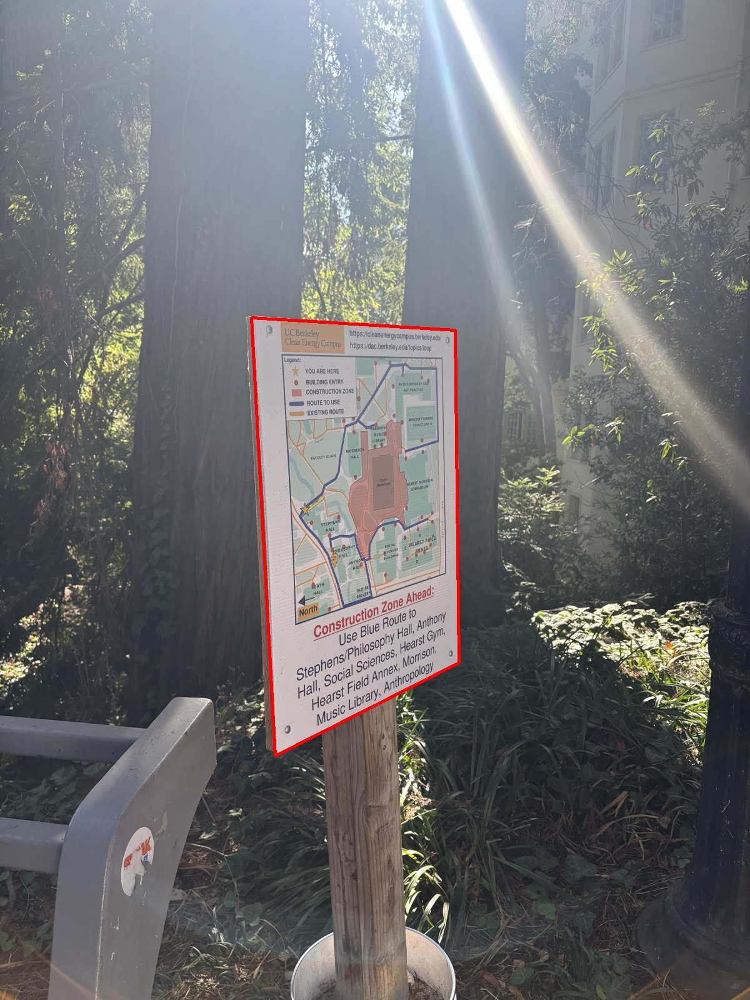
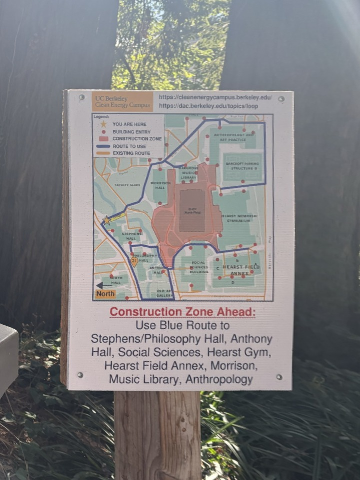
After rectification the lines of text on the sign are straight and level and the map reads as if it were photographed head-on. The surrounding trees and the post are distorted, as expected, because they do not lie in the plane of the sign. The same procedure applied to the box front gives a ratio of 0.319, approximately 1:3.
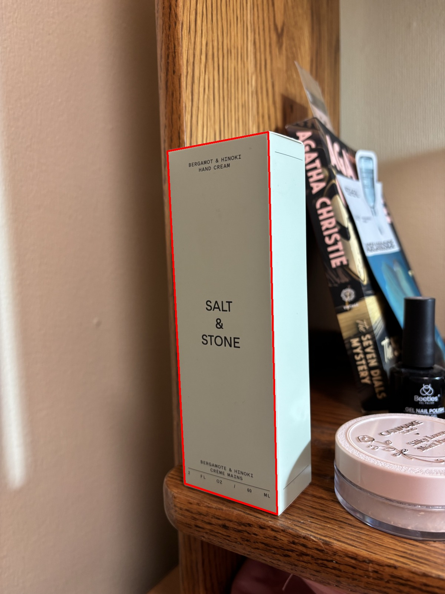
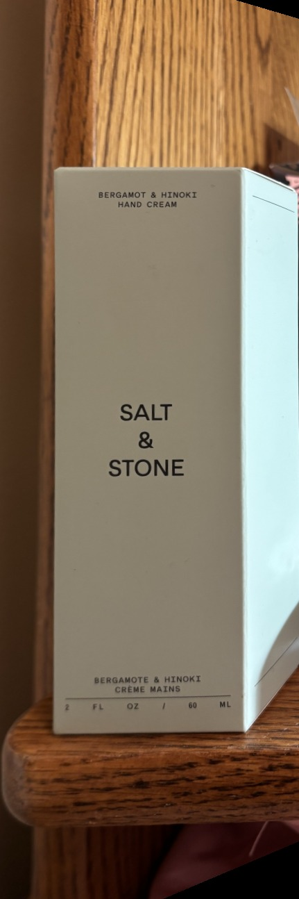
The rectified front face appears fronto-parallel, with the lettering centred and level. The side of the box and the shelf are distorted for the same reason as above.
Nearest neighbour vs bilinear
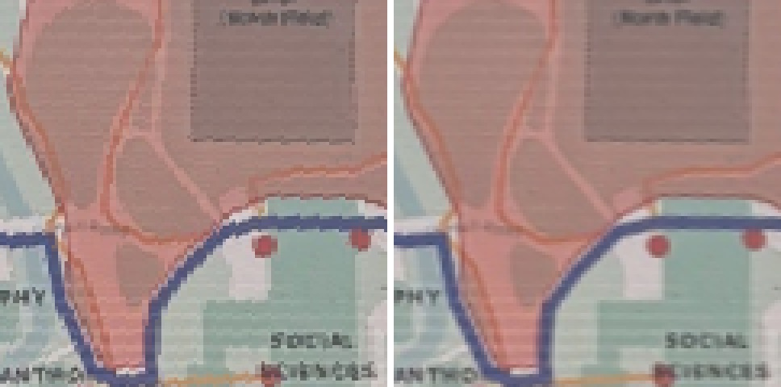
Nearest neighbour performs a single lookup per pixel and no arithmetic on colour values, but it produces blocky, staircase-like artefacts along diagonal edges, which is clearly visible on the blue route line where the warp enlarges the image. Bilinear interpolation reads four pixels and computes a weighted sum for every output pixel; this costs more, but edges and diagonal lines remain smooth, at the price of slight softening.
| map sign (721×961 output) | box (431×1294 output) | |
|---|---|---|
| nearest neighbour | 0.05 s | 0.04 s |
| bilinear | 0.14 s | 0.11 s |
In my implementation bilinear interpolation is approximately 2.5× slower. Since both methods are vectorised and complete in well under a second, I used bilinear interpolation for all mosaics.
A.4Blending images into a mosaic
For each mosaic, one photograph (the middle one) is kept fixed as the reference and all others are warped into its image plane. The procedure is as follows:
- Estimate the homography from every photo to the reference.
- Project the corners of every photo through its homography; their joint bounding box defines the size of the output canvas.
- Inverse-warp every photo onto this common canvas with bilinear interpolation.
- Blend the warped photos in their overlapping regions.
In the five-photo terrace sequence the outermost photos barely overlap the reference, so correspondences were established only between neighbouring photos and the homographies were composed, e.g. H1→3 = H2→3 H1→2. Every photo is warped together with a weight map that equals 1 at its centre and decreases linearly to 0 at its borders. I compared three ways of combining the warped photos:
- Overwrite: each photo is pasted over the previous ones.
- Weighted average: each output pixel is the average of all photos covering it, weighted by their weight maps.
- 2-band blend: a two-level Laplacian pyramid. The low-frequency band (colour and brightness) is combined by weighted averaging, while the high-frequency band (edges and texture) is taken only from the photo with the largest weight at each pixel.
Code: weights and blending
def edge_weight(shape):
# 1 in the middle of the photo, linearly down to 0 at its edges
h, w = shape[:2]
wx = 1 - np.abs(np.linspace(-1, 1, w))
wy = 1 - np.abs(np.linspace(-1, 1, h))
return np.minimum(wy[:, None], wx[None, :])
def blend_average(warped, weights):
total = np.maximum(sum(weights), 1e-12)
return sum(im * wt[..., None] for im, wt in zip(warped, weights)) / total[..., None]
def blend_two_band(warped, weights, sigma=4):
# low freqs -> weighted average so brightness changes fade smoothly
# high freqs -> only from the photo with the biggest weight, so edges don't ghost
lows, highs = [], []
for im, wt in zip(warped, weights):
a = (wt > 0).astype(float)
# blur only inside the photo, otherwise the black outside leaks in
low = blur(im * a[..., None], sigma) / np.maximum(blur(a, sigma), 1e-12)[..., None]
low *= a[..., None]
lows.append(low)
highs.append(im - low)
low = blend_average(lows, weights)
best = np.argmax(np.stack(weights), axis=0)
high = np.zeros_like(low)
for i, hi in enumerate(highs):
high[best == i] = hi[best == i]
return np.clip(low + high, 0, 1)Chuk Wong Terrace (5 photos)
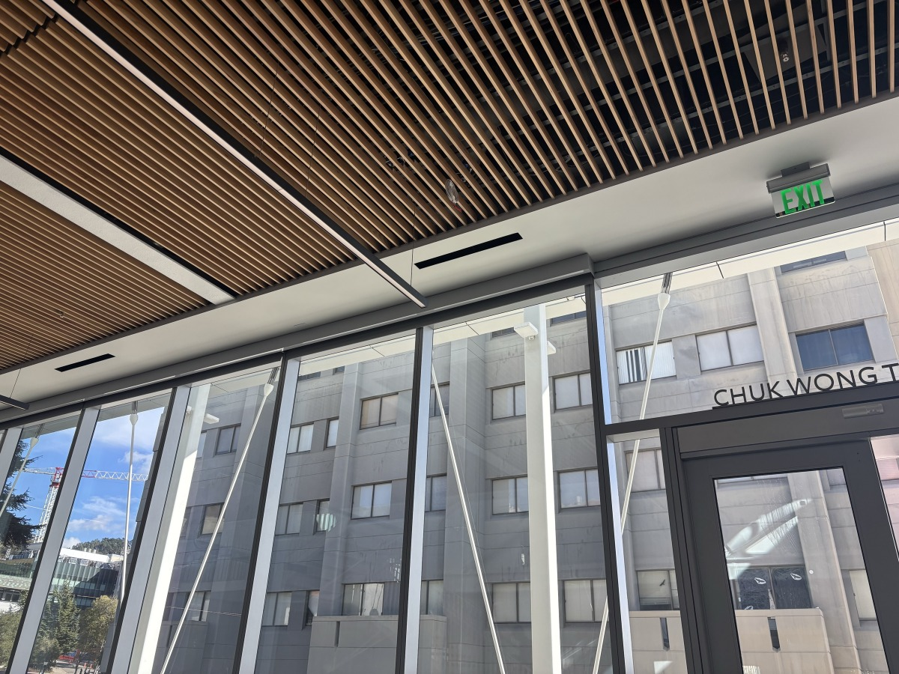
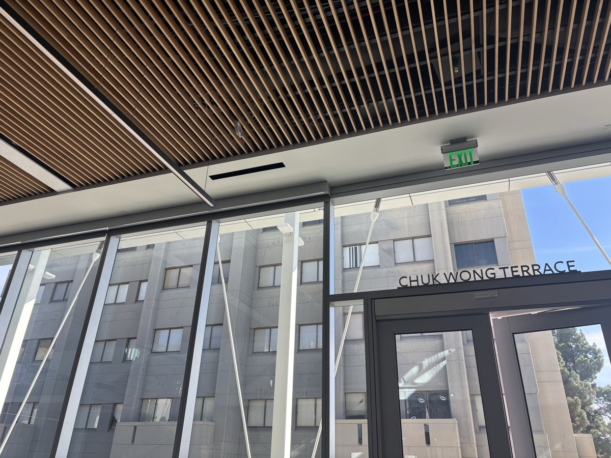
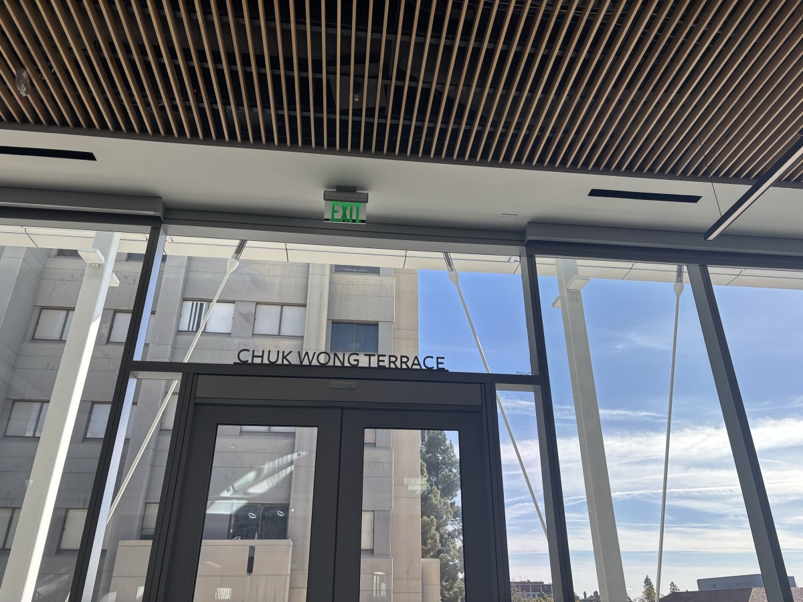
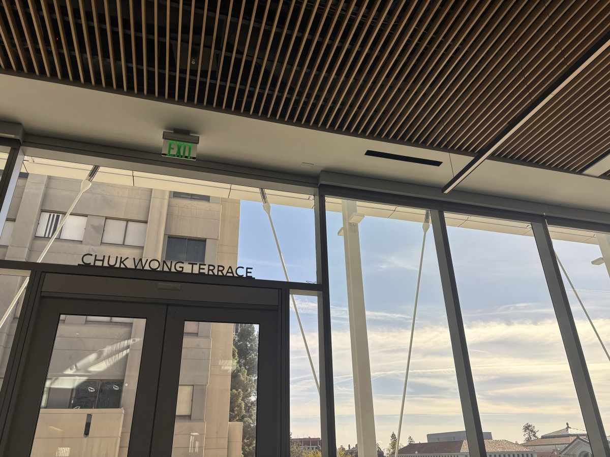
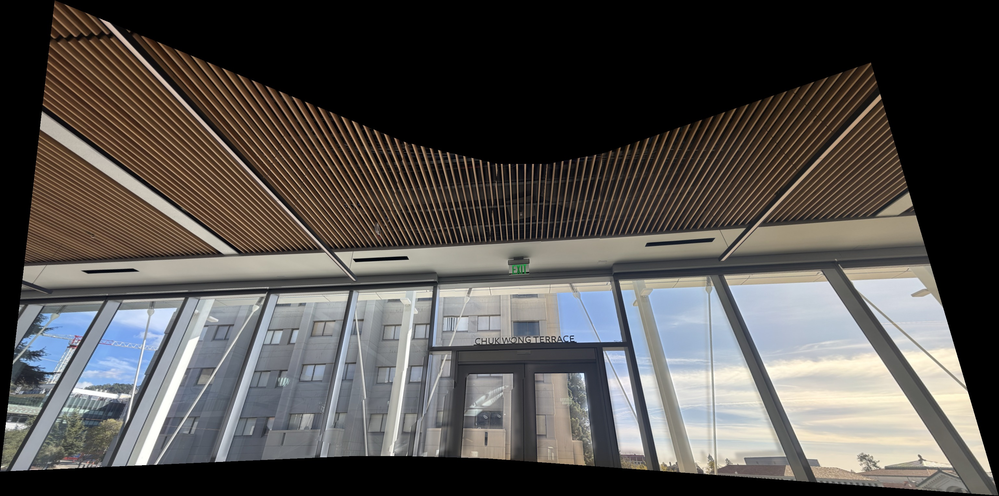
The ceiling slats, window frames and lettering are continuous across all five photos, even though the outer photos are registered to the reference only through the chained homographies. The characteristic bow-tie shape results from projecting all views onto the plane of the central photo: the further a view is rotated from it, the more strongly it is stretched.
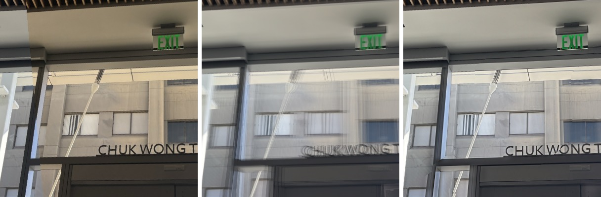
This seam illustrates the differences between the three methods. Because the exposure changed between shots, overwriting produces an abrupt brightness step at the border of a photo. Weighted averaging removes the step, but the lettering and the windows behind the glass appear doubled (ghosting), since the alignment is not exact to the pixel and the reflections in the glass shift between views. The 2-band blend combines the advantages of both: brightness transitions smoothly as in the weighted average, while the lettering stays sharp because its high-frequency content comes from a single photo.
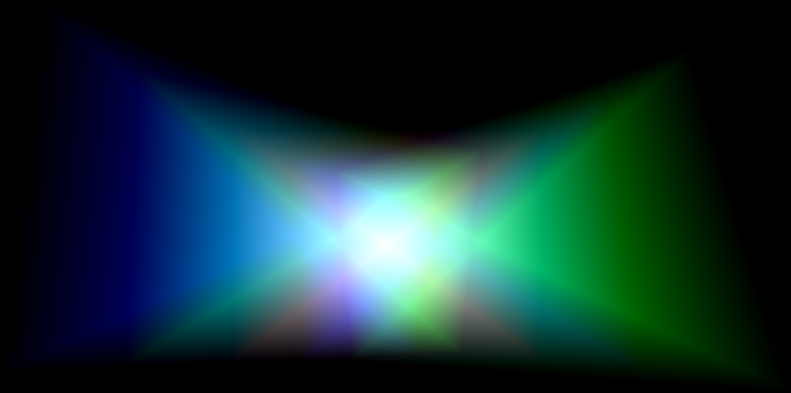
Anthropology & Art Practice building (3 photos)
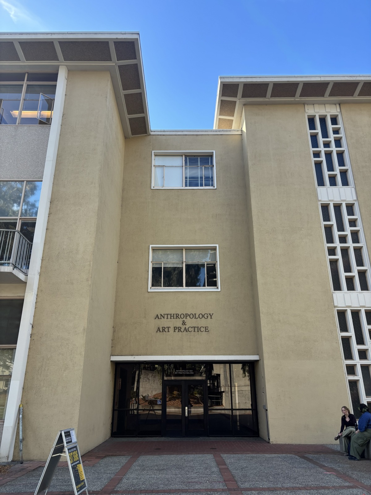
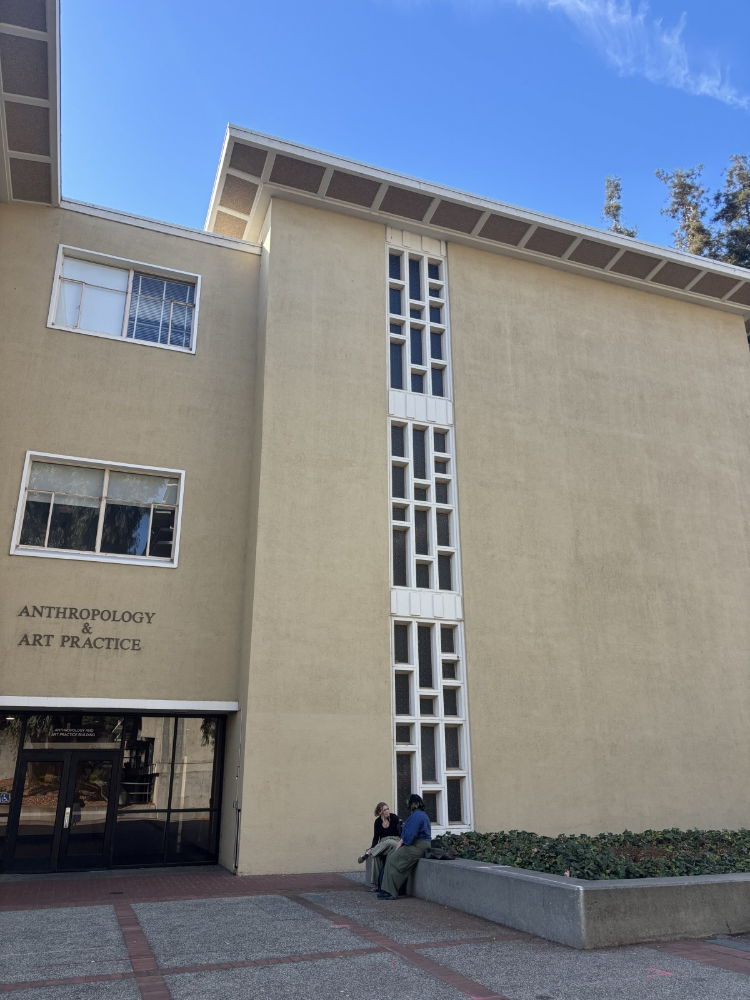
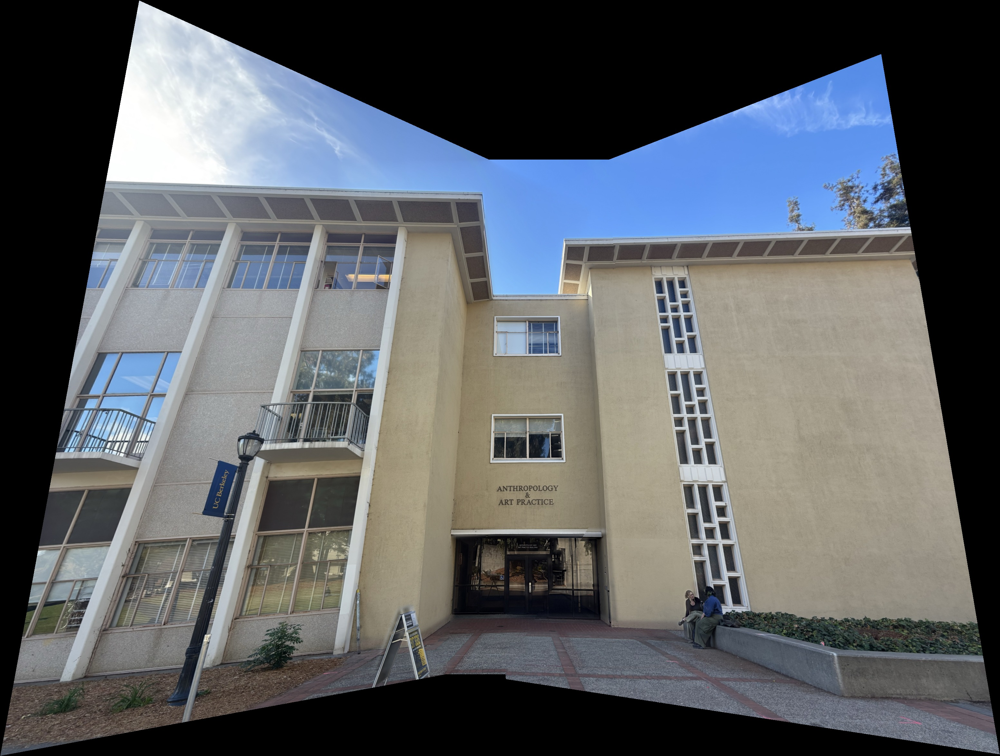
The roof lines, windows and entrance are continuous across both seams. Since the overlapping regions consist mostly of plain wall, the three blending methods produce very similar results for this scene.
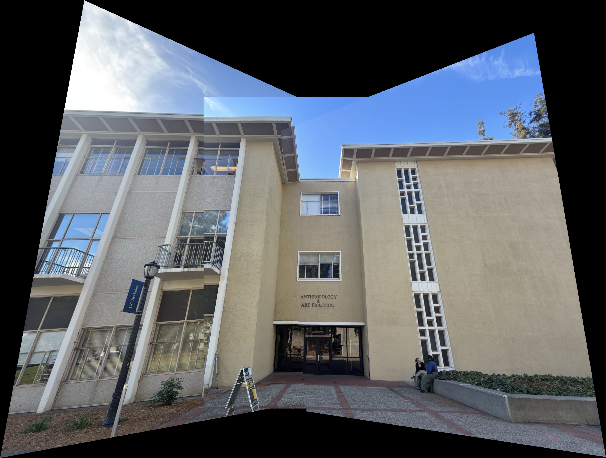
Concrete building with sunshades (2 photos)
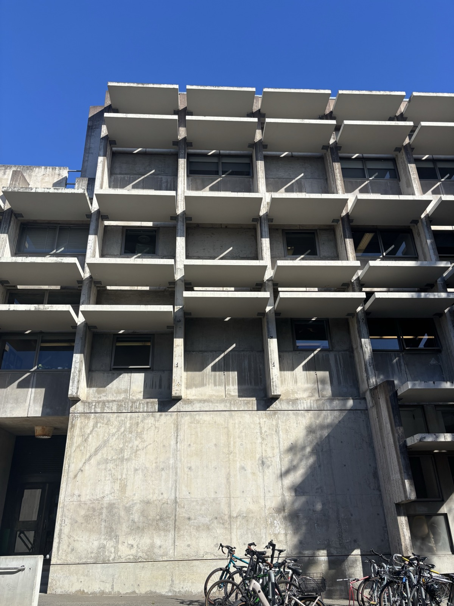
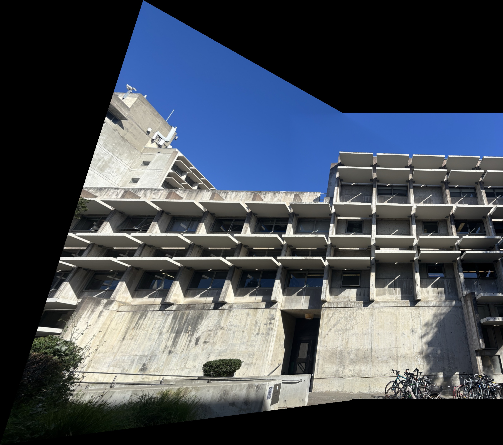
This pair has the most accurate homography (mean reprojection error 1.3 px), and the rows of sunshades, the door and the lamp align precisely across the seam.
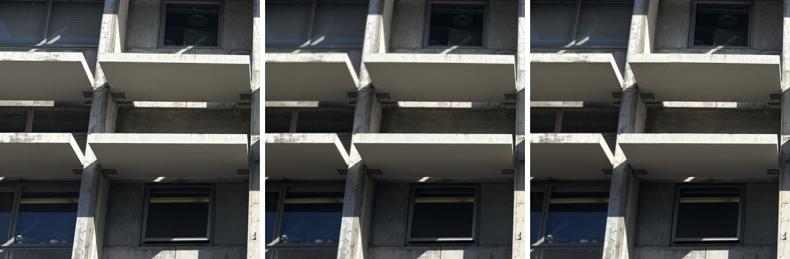
What I learned
A single 3×3 homography, estimated by least squares, is sufficient both to rectify planar objects and to register a sequence of rotated views into a panorama. The quality of the result depends largely on the inputs: well-distributed correspondences make the estimate robust, and the photographs must share a common centre of projection for one homography to describe them. Finally, separating low and high frequencies, as in Project 2, proved essential for blending: it hides exposure differences without introducing ghosting.